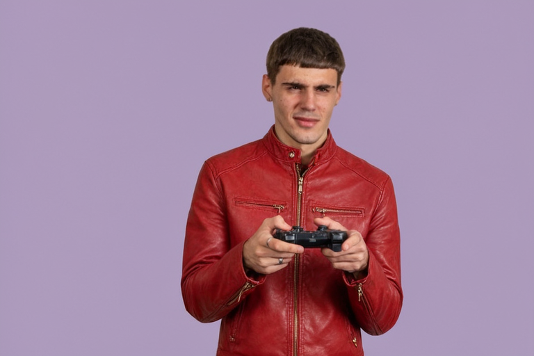

Feature 1 · Natural Language Instruction
Single Image Edit: Text-Guided Attribute Transformation
Transform specific attributes, lighting, materials, or garments from a single reference image without affecting facial identity, pose, or background depth. The Qwen3-VL-4B vision encoder grounds the source image while the 44-layer DiT applies targeted edits in just 4 steps.
Prompt: "the jacket color is now red"
Input Reference
Source Image
Bria AI Reference
bf16 Baseline

DiffusionBear Studio
MLX 4-bit (4 steps)